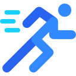

Beneficios

Mobilidad

Dormir Mejor

Bienestar General
La Quiropraxia Inka es una técnica ancestral que fue creada y usada por los antiguos inkas y fue posteriormente creciendo en con conocimientos y propagado por ellos con lagunas mas civilizaciones de la época acre sentado su popularidad de sanacion asimismo la Quiropraxia Inka es un conjunto de movimientos y manipuciones que van directo al dolor Dando asi salud y bienestar a nuestro cuerpo la técnica es muy completa puesta que se aplica de pies a cabeza esto quiere decir que por todo loque nos permite manipular en el cuerpo hay asta un 70 a 80 por ciento de sanacion dese la primera secion
Mobilidad
Dormir Mejor
Bienestar General
La Quiropraxia Inka puede tratar varios padecimientos los que incluyen: la escoliosis, hernias discales, listésis, ciaticas, lumbalgias, dorsalgias, cervicalgias, braquialgias, contracturas dolorosas, etc., y sus efectos nocivos sobre el organismo pueden ser solucionados aun desde la primera sesión.
Sera evaluado y tomando en cuenta su sintomatologia, historial clinico, asi como cualquier diagnostico y estudio clinico, ya tenido. Lo que se hara, a conciencia y profesionalismo y se le informara en que consistirá su tratamiento a seguir y el número de sesiones recomendadas para tratar su problema exitosamente. Y si asi lo desea, se iniciará su Terapia.
La terapia consiste en manipulaciones y estiramientos los cuales nos ayudan a relajarnos. Devuelve a la persona la salud perdida, desapareciendo el dolor y sintomas, devolviendo la libertad de movimiento, recuperando el ánimo, la alegría perdida. La terapia nos permite realizar tres movimientos en uno. Manipulación de músculos, tendones y huesos y es una terapia que se compone generalmente de manipulaciones óseas.
La terapia se distingue de otras terapéuticas, porque requiere pocas sesiones para solucionar el problema musculo esquelético. Por lo regular cada paciente es diferente depende mucho de su estado físico y salud. Por lo comun dos terapias son suficientes para notar cambios. En ocasiones desde la primera sesión el paciente puede experimentar una mejoría inmediata.
Contactame
__

{kind=link}